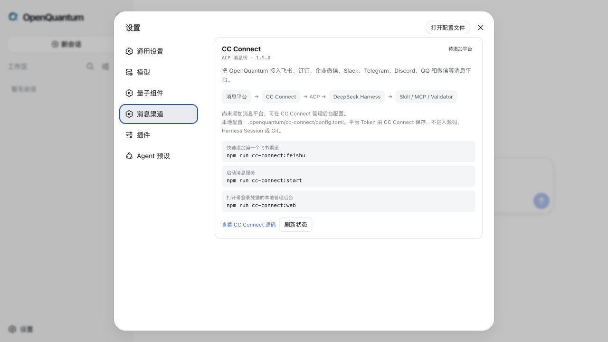

预计阅读 3 分钟
量子计算，就在指尖。配置完成后，你可以从网页、微信或飞书发出一句话，让同一个 OpenQuantum Agent 去调用量子工具、算法和云端后端。
这两天，我给 OpenQuantum 补上了一条很重要的通道。
以前，你需要打开网页才能使用这个量子 Agent 工作台。
现在，配置好消息平台以后，微信和飞书也能成为入口。
你可以直接发一句，帮我检查这段 OpenQASM 电路。
也可以问，哪些量子后端满足我的量子位要求。
甚至可以让它运行一个量子算法，再把计算结果和科学检查一起交回来。
说真的，这种感觉还挺奇妙的。
手机负责提出问题，OpenQuantum 负责连接量子能力，DeepSeek Harness 负责把整个任务可靠地跑起来。
OpenQuantum 首页，从一句自然语言开始一项量子任务。
这不是另外做了一个聊天机器人。
网页和消息平台背后，用的还是同一套 Harness Session、权限、Skill、MCP 和执行记录。换了入口，量子能力没有重做，开发者熟悉的轨迹也还在。
目前 OpenQuantum 已经接入 Qiskit Circuits、Qiskit Docs、FieldQKit 和 TyxonQ。IBM Runtime、IBM Transpiler、IonQ 以及多家国内量子云也准备了配置入口。
不需要凭据的电路分析、本地算法和文档查询，装好就能用。
真实硬件和付费云服务默认关闭，只有在用户填入对应凭据并主动开启以后才会运行。
这一点我觉得还是挺重要的。
方便归方便，涉及真实设备、费用和科研结论的边界不能糊。

手机里看到答案，工作台里仍然保留完整的 Harness 执行轨迹。
具体怎么用，我尽量写得直接一点。
先准备 Node.js 24 和 uv，然后安装 OpenQuantum。
git clone https://github.com/xi-zhao/openQuantum.git
cd openQuantum
npm ci
cp .env.example .env打开 .env，填入自己的 OpenAI 兼容模型地址和 API
Key。
OPENQUANTUM_PUBLIC_BASE_URL=https://your-model-endpoint.example/v1
OPENQUANTUM_PUBLIC_API_KEY=your-api-key然后启动网页。
npm run dev浏览器打开 http://127.0.0.1:3000，就能进入
OpenQuantum。Qiskit Circuits、Qiskit Docs
和本地量子基态能力不需要量子云密钥，可以直接开始体验。
想接入个人微信，再运行下面几条命令。
npm run cc-connect:setup
npm run cc-connect:weixin
npm run cc-connect:start如果使用飞书，把第二条换成
npm run cc-connect:feishu。
服务启动后，另开一个终端运行
npm run cc-connect:web，就可以在 CC Connect
的本地管理页面继续添加微信、飞书、钉钉、企业微信、Slack、Telegram、Discord
或 QQ。

设置中心可以查看 CC Connect 是否安装、配置和运行，但不会回显平台 Token。
如果要连接 IBM Quantum、IonQ 或国内量子云，就去「设置 → 量子组件 → 安全凭据」填入对应 Token，再开启需要的 MCP。凭据只保存在本机的 Harness 凭据库里，不会写进项目配置和 Git。
我还保留了一个很小但完整的量子基态参考任务。
它会运行二量子位 VQE，再用另一套独立程序检查能量、态矢、收敛轨迹和数值残差。
真实运行中，VQE 和独立精确参考都是 -1.85727503 Ha，能量差约为 4.44 × 10^-16 Ha，所有科学检查通过。

工具运行完成只是第一步，科学结论还要经过独立检查。
我做 OpenQuantum 的想法其实很简单。
量子公司可以接自己的硬件和云服务，高校实验室可以沉淀自己的研究流程，算法团队可以加入新的 Skill、MCP 和 Validator。
网页可以是入口。
微信也可以是入口。
后面那套开放、可追踪、还能继续开发的量子能力，始终是同一套。
量子计算，就在指尖。
项目地址